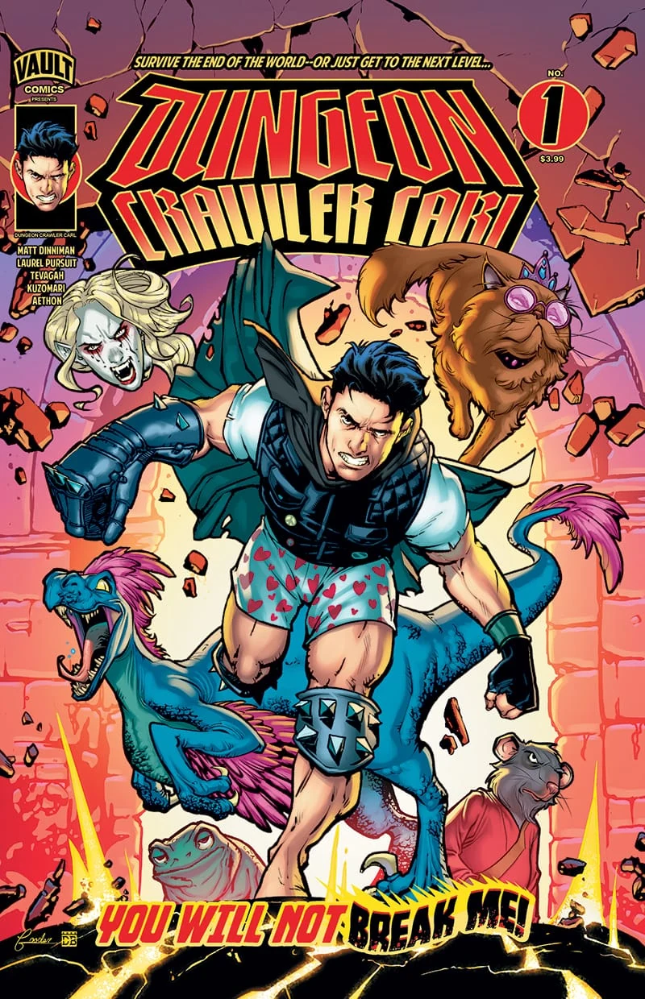

OLD MAN OTAKU / COMICS & PUBLISHING
Dungeon Crawler Carl Moves From Vertical Scrolls to Monthly Comic-Shop Issues
Vault’s January 2027 launch adapts the existing WEBTOON comic for a new reading format—and offers creators a useful publishing case study.

Dungeon Crawler Carl is adding another way to enter the dungeon: monthly comic-shop issues.
Vault Comics has announced an ongoing series beginning in January 2027, adapting the existing WEBTOON comic based on Matt Dinniman’s novels. The publisher credits Dinniman and Tevagah with writing, with artwork by Laurel Pursuit Studios and Kuzomari.
The first issue is scheduled for January 20 and runs 48 pages, combining the first two WEBTOON episodes, according to the January solicitations. Vault says the artwork is being scaled for the comic-book page, with later issues following monthly.
This is a new single-issue publishing format, not the franchise’s first graphic-novel edition. Collected editions of the comic adaptation already exist.
The format is part of the adaptation
RogueVerse analysis: A vertical comic and a printed comic control the reader’s attention differently. On a phone, a reveal can sit below a long stretch of scrolling space. In print, it might depend on a page turn, a panel arrangement, or the relationship between two facing pages.
That makes the announced adjustment to the art worth watching. Moving a story into print involves decisions about pacing and readability, beyond simply placing a tall image on a shorter page.
Monthly issues create another rhythm as well. Each installment needs a satisfying reading experience while giving readers a reason to return. The challenge is to preserve the story’s momentum across those new stopping points.
What independent creators can take from it
This case suggests that digital and physical publication can serve different readers within one property. Some people discover a comic through a phone. Others prefer a collected book or a regular visit to their local comic shop.
It is not a guaranteed business model for every independent series. Dungeon Crawler Carl brings an established audience, publishing partners, and a much larger franchise behind it. A smaller project would need to weigh production costs, distribution, and demand on its own terms.
The useful lesson is to plan for the possibility of other formats while making the current version work well. Keep usable production files, think carefully about page design, and understand which adaptation rights remain available. A successful story may eventually need more than one doorway.
Copyright & image ownership
Cover art: Nathan Gooden / Vault Comics. Dungeon Crawler Carl and its characters belong to their respective rights holders.
Third-party characters, artwork, titles, logos and trademarks belong to their respective rights holders. Images accompany editorial reporting and commentary; RogueVerse Studio claims no ownership of third-party IP and is not affiliated with or endorsed by its rights holders.
Article text and RogueVerse branding © 2026 RogueVerse Studio. All rights reserved.